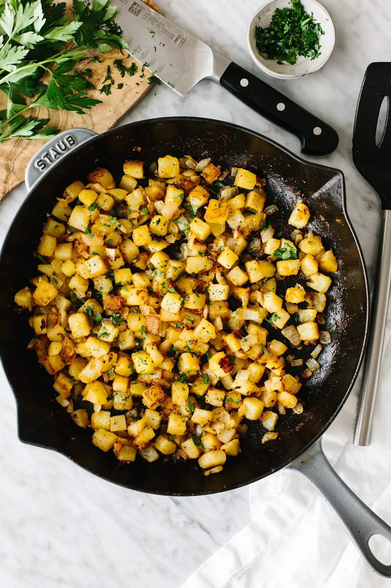

Breakfast Potatoes

Breakfast potatoes are just like your classic diner-style home fries that are warm and crispy with perfectly browned edges.
With a few simple seasonings and spices, these tasty potatoes will be a welcome addition to your breakfast spread.
Ingridients
- 3 yukpn gold potatoes
- 1 whole yellow onion
- 1.5 teaspoon garlic
- 1.5 teaspoon paprika
- 1 teaspoon salt
- 1 teapsoon pepper
- Parsley
Steps
- Cut the potatoes into small wedges and boil them. Add the wedges into a pot of cold water, cover, and bring it to a boil for about 5 minutes. Then drain and dry
- Cook the potatoes. Heat the oil in your cast iron and and spread the potatoes out into a flat layer. But cook them undisturbed for about 5 minutes to get that golden brown skin.
- Add the seasoning. Slowly saute the potatoes with the onion, garlic, garlic powder, and paprika for about 5-10 minutes.
- Serve. Remove the pan from the heat, season with salt and pepper, and garnish with chopped parsley.